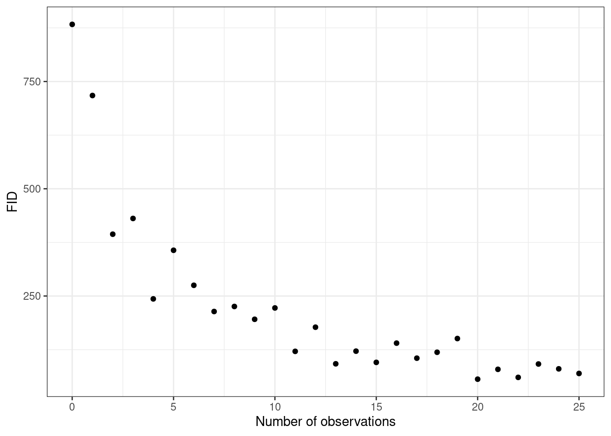
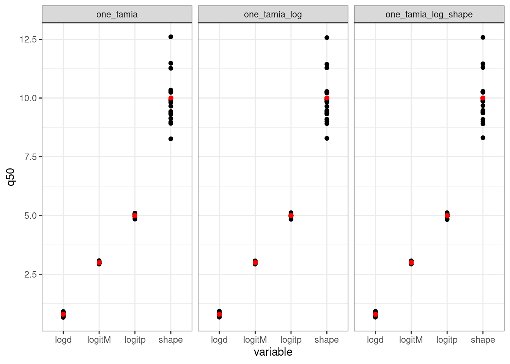

Simulations to measure the performance of a nonlinear model of habituation
Author
Andrew MacDonald
Introduction
It is important to validate our statistical models before using them to reach conclusions about ecological systems. In this paper we propose a nonlinear, hierarchical statistical model to capture how Flight Initiation Distance changes with increased exposure. In this Appendix we use simulations to validate this new model, following a produced suggested by DiRenzo, Hanks and Miller (2023). We use simulations to answer several distinct questions:
Which priors are appropriate? In hierarchical nonlinear models, it is difficult to select appropriate priors by inspection. Instead we use prior predictive checks: we select values from the prior and use these to create fake datasets.
Does the model recover parameters with large datasets? In models with many parameters, there is always the risk that parameters are difficult to estimate well. We fit a model with a large number of Tamia , each observed for many repeat observations, to validate that in this “idea” setting the model works well.
Does the model recover parameters in our dataset? Our field dataset contains unequal numbers of observations for each chipmunk, and field constraints mean that sample size in particular treatment combinations is limited. We simulate observations, while keeping every aspect of our dataset the same (treatments, number of observations per individual, etc). If a model can recover true parameters here, we can be more confident about applying it to our real observations.
Can unbalanced categories lead to spurious effect size estimates? Due to small sample effects, we do not have exactly equal representation in all of our treatment combinations. This is especially important in model 4, where we include sex and several aspects of individual personality in our model (see main text). Importantly, because of male chipmunk behaviour, males have fewer observations per individual than do females. We use simulations to confirm that effects of sex or personality on our results is not caused by the structure of the data.
What is our power to measure individual variation? One of the main purposes of our study is to measure individual variation in habituation. We compare our model with a method popular in the literature to detect these changes.
1. Which priors are appropriate?
Single-individual model
We begin by evaluating the simplest case: one individual Tamia, observed repeatedly and habituating to a constant stimulus. We model the habituation using the following assumptions:
Tamia begin with a high FID. This value is between 0 and 1000cm, because in our experiment this was the maximum distance at which an experimenter initiated the threat treatment.
FID declines with repeat exposures. It never goes below 0, and can only decline. While other models allow individuals to sensitize, we do not.
FID does not need to decline all the way to 0, but can stop between 0 and the starting value. * FID declines such that after a certain number of exposures, the individual’s FID is halfway between the starting value and the final value. The higher the number of exposures needed to get halfway to final FID, the slower the habituation.
The curve we finally ended up fitting resembles a classic TYPE II functional response curve, but inverted and scaled to correspond to our system.
This model is an adaptation of the classic Type II functional response, adapted to our study. It describes the FID of a chipmunk in three values:
\(M\), the initial flight initiation distance (proportion of 1000cm)
\(p\), the proportion of this initial FID which is lost through habituation
\(d\), the number of exposures to threat required for a chipmunk to move from \(M\) to its final FID after habituation.
This is an initial version of the model, which does not contain any effect of threat treatment or any effect of personality.
Here is the full bayesian model, including our expression for the average and all the priors.
one_tamia_simulation(0:25,logitM =3,logitp =5,logd = .8,shape =10)[c("num_obs", "FID")] |>as.data.frame() |>ggplot(aes(x = num_obs, y = FID)) +geom_point() +labs(x ="Number of observations") +theme_bw()

A simulation of 25 observations of one Tamia individual. Y-axis shows flight initiation distance in cm.
Different parameterizations
I’ve chosen to experiment with writing this model on the log scale. This will give us more flexibility later, and may also help the model to fit accurately.
These results show that all three models give very similar inference. For the rest of this project I’m using the log-scale calculation as in many_tamia_log, above.
Prior predictive distribution
The above was fit to a model where the observations vary but the parameters all have the same values. However, to be sure our model works well we should fit it to a prior simulation of the dataset. Here, the values of all parameters are sampled from the prior distribution. Then, these values are used to simulate a dataset, the model is fit to it, and we see how often the true value falls within the 95% interval of the resulting posterior.
Code
tar_load(prior_pred)prior_pred |>filter(variable %in%c("logitM", "logitp", "logd", "shape")) |>mutate(q2.5 =if_else( .name =="one_tamia_log_shape"& variable =="shape",exp(q2.5), q2.5),q97.5 =if_else( .name =="one_tamia_log_shape"& variable =="shape",exp(q97.5), q97.5) ) |>group_by(.name, variable) |>summarize(cov_95 =sum(.join_data > q2.5& .join_data < q97.5)/n()) |>ggplot(aes(x = variable, y = cov_95)) +geom_point() +facet_wrap(~.name) +coord_cartesian(ylim =c(0,1))#> `summarise()` has grouped output by '.name'. You can override using the#> `.groups` argument.

This shows that coverage is excellent for all parameters, with the exception of logd, which is recovered a little less than 80% of the time at the 95% confidence interval.
Multiple individuals
To extend this model to multiple individuals we need to add hyperparameters to it:
Simulating data from a prior is essential for defining priors that reflect knowledge about a system. Here we have chosen very general priors that cover a wide range of FID responses to threat treatment. This includes many which are biologically implausible, indicating that our prior is not too restrictive. However it excludes many cases that do not match our knowledge of the system: for example, FIDs which increase with exposure, or extremely rapid or slow habituation.
Code
tar_load(prior_pred_data)prior_pred_data |>map_depth(2, ~.x[c("num_obs", "FID")]) |>flatten() |>map_df(as_tibble, .id ="rep") |> ggplot2::ggplot(ggplot2::aes(x = num_obs, y = FID)) + ggplot2::geom_point() + ggplot2::facet_wrap(~rep) +labs(x ="Number of observations", y ="FID") +theme_bw()
Figure 1: Simulations from the prior predictive distribution for our model of FID (Flight initiation distance). Each panel is a simulated chipmunk.
\(p\) can be understood as the strength of habituation. The higher (more positive), the more of the original FID is lost over time.
We can understand hyperparameters (i.e. \(\sigma_M, \sigma_p, \sigma_d\) and \(R\)) by simulating and asking if they represent a plausible range of between-tamia variation. Again, we try to cover a range of plausible values while allowing for extreme cases.
Proportion of coverage
I performed the same coverage tests as before, but this time on the hierarchical model for multiple individuals. This demonstrates that we can accurately
Code
tar_load(cov_hier)cov_hier |>filter(variable %in%c("mu_m", "mu_p", "mu_d", "shape", "sigma_m", "sigma_d", "sigma_p")) |>group_by(.name, variable) |>summarize(cov_95 =sum(.join_data > q2.5& .join_data < q97.5)/n()) |>ggplot(aes(x = variable, y = cov_95)) +geom_point() +facet_wrap(~.name) +coord_cartesian(ylim =c(0,1))#> `summarise()` has grouped output by '.name'. You can override using the#> `.groups` argument.
Proportion of coverage for all parameters (left) and for all the population-level parameters (right). That is, the right-hand figure shows only the main effects, shape parameter, and hyperparameters; it excludes the individual values of M, p and d for each individual.
Prior predictive checks and
Code
tar_load(design_data)tar_load(prior_draws_risk_ordinal_many_tamia_log)prior_draws_risk_ordinal_many_tamia_log |># use rowname as column name for easy merging later!gather_draws(mu[rowname], ndraws =5, seed =42) |>left_join(design_data |>rownames_to_column(var ="rowname") |>mutate(rowname =parse_number(rowname))) |>ggplot(aes(x = num_obs, y =1/.value, group = tamia_id)) +geom_line() +coord_cartesian(ylim =c(0, 1000)) +facet_grid(.draw~Risk)#> Joining with `by = join_by(rowname)`
Design data
So far, the simulations have used an idealized dataset where all individuals are observed a large number of times. In the following section I assess the model’s performance on a data simulation based on the real dataset. In reality, different individuals are not observed the same number of times. Observations, in this dataset, have a double impact on the model: they are simultaneously the independent variable and also represent greater power. Therefore its important to find out if a realistic distribution of observations per individual actually results in less power or worse performace.
Code
tar_load(design_sim)design_simulation <- design_sim[c("num_obs", "tamia_id", "FID", "mu")] |>as.data.frame()design_simulation |>ggplot(aes(x = num_obs, y = mu, group = tamia_id)) +geom_line()design_simulation |>ggplot(aes(x = num_obs, y = FID, group = tamia_id)) +geom_point()
Simulations from the prior distribution.
Simulations from the prior distribution.
Fit to many of these and look at posterior coverage
under construction
the following validation was done with an earlier version of the process (using brms, not Stan) and needs to be updated. It might change a bit as a result.
Model 4
In model 4, we attempt to explain individual differences in the parameters \(M\), \(p\) and \(d\) by adding individual-level predictor variables to our model. These are sex, number of previous captures, Docility, and Explorativeness. However, such effects might be difficult to detect in our experiment, as this represents more parameters to estimate. This is especially important for sex: male chipmunks are less likely to remain in the study area, and therefore are less likely to be observed frequently. This results in less opportunity to observe their habituation. It might also result in a biased estimate of differences between the sexes.
To investigate the possibility of spurious effects of individual-level predictors, we simulated data using Model 1 above. This model does not have any effects of the four predictors above. We then fit a model which contains all the predictor variables.
The simulation produces chipmunk which vary individually, and which have the same number of observations per individual as the real dataset. We then analyzed this model with Model 4. Since there are no effects of individual-level predictors present in the model (other than Risk), We should find the posterior distributions to be close to 0 for \(\beta_c\), \(\beta_x\), \(\beta_d\) and \(\beta_{sex}\)
In general, the model finds posteriors that are close to 0 for all coefficients. However, there is a surprising bias towards spurious sex-differences in the value of \(p\). This is possibly due to the lower sample size of male chipmunks
Transformations
A common way to work with this kind of data is to transform it.
here I’m defining habituation in a specific way – that while individuals might start at different FID, their response to successive exposures to a stimulus is different. That is, there is individual variation in the “slope”.
\[
\begin{align}
g(\text{FID}_i) &\sim \text{Normal}(\mu_i, \sigma)\\
\mu_i &= \beta_{0, \text{indiv}[i]} + \beta_1\times(\text{exposure})
\end{align}
\] Which is compared to a model where slopes vary for each individual
On the left is the average FID, on the right is observations around this average (note the slightly different scale). note that this variation is much lower than the variation we found in our dataset. There is also individual variation here, a bit greater than what was found in the real dataset.
I simulated many datasets that looked like this one. For each, I fit a pair of models. One model has individual differences in habituation (i.e. close to the truth); the other model has constant habituation for all individuals. For each dataset, I compared both models using LOO-IC (basically a bayesian AIC). The following figure shows the model comparison output. More negative numbers mean the model WITH variation is winning (the numbers measure how much lower the LOO-IC score is for the constant-habituation model)
These results show the increased power of our approach in comparison to two others: log transformed FID and square-root transformed FID. I think it is interesting that it seems a square-root model isn’t able to detect individual difference, even at small sample size.
Its not that surprising that the nonlinear model fits well, since that is the data-generating model. What’s interesting to me is that the square root, and even the log - transformed model have quite weak results.
References
DiRenzo, Graziella V., Ephraim Hanks, and David A. W. Miller. 2023. “A Practical Guide to Understanding and Validating Complex Models Using Data Simulations.”Methods in Ecology and Evolution 14 (1): 203–17. https://doi.org/10.1111/2041-210X.14030.